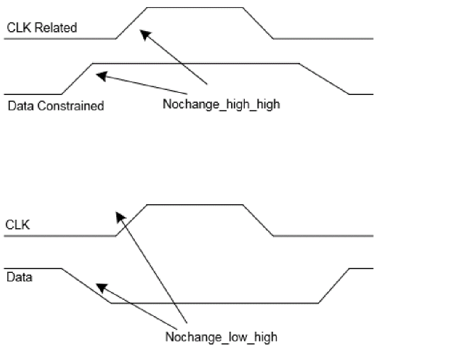
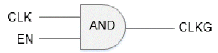
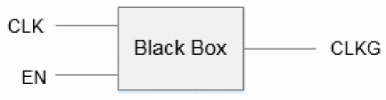
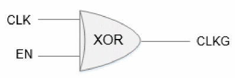
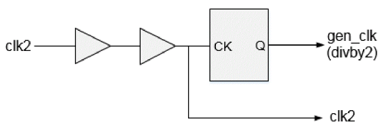

Basic Elements of Timing Model Extraction
The following basic elements are relevant to model extraction:
- Nets – internal and boundary nets
- Timing Paths - check and delay paths – in2reg, in2out, and reg2out paths
- Minimum Pulse Width and Period Checks
- Path Exceptions – false, multi-cycle, min delay, max delay, disable timing
- Constants
- Unconstrained Paths
- Clock Gating Checks
- Annotate Delays, Slews, and Load
- Design Rules
- Clocks - created clocks and generated clocks
These are explained in the following sections.
Nets
Nets can mainly be classified into two types – boundary nets and internal nets. The nets which are directly connected to the input or output ports of the block are termed as the boundary nets. The nets which drive and are driven by some internal instance pin of the block are termed as the internal nets. Model extraction treats both the nets differently as boundary nets are always related and connected to the context.
-
Boundary Nets
The boundaries are connected to the context. So the RC data for them may change if the context of the block changes at a later stage. To be better context independent the model should not consider SPEF or DSPEF data for their delay calculation and a separate SPEF/DSPEF file for the boundary nets can be stitched to the top level data while instantiating the extracted model.
The software by default considers the RC data while extracting the model. The software provides a command-line option that can be used to ignore the RC data for boundary nets by using the following command:set_delay_cal_mode -ignoreNetLoad true
-
Internal Nets
As the internal nets connect the pins for the internal instance of the block, they are in no way dependent on the context environment. So the RC data defined for the internal nets is used as it is for delay calculation and is added in the extracted paths. If no RC is defined for these nets, then the wire load models are used to calculate their delays.
However, if a load or resistance is annotated using the set_load/set_resistance command, then it will override the annotated SPEF or the applied wire load model.
If the nets are annotated with the delays using the set_annotated_delay command or SDF annotation, then the annotated delay is used instead of the calculated delays. In case of incremental delays the addition of calculated and incremental delays is used.
Timing Paths
Timing paths are broadly divided in four types:
-
In2Reg Paths
A In2reg path is a setup/hold check that starts from an input port and is captured at a flop or gating element by a clock. So the in2reg type of paths are captured in equivalent setup or hold checks. The setup/hold values to be written in ETM are calculated using the data path delay, the setup/hold value of the library cell and the clock path delay. The equations can be written as follows.
Setup arc value = data path delay (input to flop) + setup value of flop – clock path delay (clock source to clk pin) Hold arc value = data path delay (input to flop) - hold value of flop – clock path delay (clock source to clk pin)
The value for these arcs is the function of the transition on the input port and the transition at the clock source. If a flop is captured by multiple clocks then separate setup/hold arcs are extracted with respect to each clock source. -
Reg2out Paths
The reg2out paths are paths starting from a register and ending up on an output port. These paths are a combination of trigger arcs (of starting register) and the combinational delay from sink of trigger arc to the output port. So for such paths an equivalent trigger/sequential arc is modeled in the extracted model. The delay for the arc will be equal to:
Sequential arc delay = delay (clock source to CK of register) + delay (register CK pin to out port).
The delay for these arcs is a function of the slew at the clock source and the capacitance at the output port. As the extracted model can be used for max as well as min analysis, two arcs are preserved in the model to represent the longest and the shortest path. Different types (rising_edge/falling_edge) of arcs are extracted for the different valid clock edges. -
In2Out Paths
The in2out paths are the path starting from an input port and ending up on an output port. These paths are pure combinational paths. So for such paths an equivalent combinational arc is modeled in the extracted model. The delay for the arc will be equal to:
Combinational arc delay = delay (delay of all elements in the path)
The delay for these arcs is a function of the slew at the input port and the capacitance at the output port. As the extracted model can be used for max as well as min analysis, two arcs are preserved in the model to represent the longest and the shortest combinational path. In case if no path exists for a particular transition (rise/fall), half unate (combinational_rise /combinational_fall) arcs will be extracted. The timing sense for the arc will depend on the function of worst (early/late) paths.
Minimum Pulse Width and Period Checks
The minimum pulse width and period constraints defined at the CK pin of the registers are transferred to the clock source pins during model extraction.
There may be several different type of registers in the fanout of a clock source. So while transferring the minimum pulse width to the clock source you can use the worst values present on the fanout registers. The pulse width is calculated as:
- pulse width = MAX(Arrival time of Launch clock Path - Arrival time of Capture Clock Path + pulse width at clock pins from library)
The minimum period for any clock pin is calculated in the same way as the minimum pulse width. The minimum period is calculated as:
- Min Period = MAX(Arrival time of Launch clock Path - Arrival time of Capture Clock Path + Min Period at clock pins from library)
These checks can be modeled in the following three ways:
Library Attribute
By default, these checks are written as library attributes in ETM.
pin (CLKIN2 ) {
clock : true ;
min_period : 2.0554;
min_period : 2.6248;
min_pulse_width_low : 0.2773;
min_pulse_width_high : 0.7673;
}
If min_period checks corresponding to both rise and fall transitions are present in a design, then they will be modeled as duplicate entries in ETM when written as library attributes. To avoid duplicate entries we can model these checks as scalar tables or arcs, where rise and fall transition of min_period checks can be modeled as shown in following sections. These arcs will be honored by the timer depending on the context, hence will be more accurate.
Scalar Tables
If the timing_extract_model_write_clock_checks_as_scalar_tables global variable is set to true, then these checks will be written as scalar tables as shown below:
pin (CLKIN2 ) {
clock : true ;
timing() {
timing_type : minimum_period ;
rise_constraint (scalar){
values( " 2.0554");
}
fall_constraint (scalar){
values( " 2.6248");
}
related_pin :" CLKIN2 ";
}
timing() {
timing_type : min_pulse_width ;
rise_constraint (scalar){
values( " 0.7673");
}
fall_constraint (scalar){
values( " 0.2773");
}
related_pin :" CLKIN2 ";
}
}
Arc-Based Modeling
These checks can also be written as arcs by setting the timing_extract_model_write_clock_checks_as_arc global variable to true. In this case the resulting arc is the function of rise/fall slew of CLK port, hence delay and slew propagation of the clock network for rise and fall transitions is considered for writing these arcs. The arc-based modeling of clock-style checks is more accurate and is recommended for use.
pin (CLKIN2 ) {
clock : true ;
timing() {
timing_type : minimum_period ;
rise_constraint (lut_timing_2 ){
values(" 2.000, 2.000, 2.000, 2.000, 2.000, 2.000, 2.000");
}
fall_constraint (lut_timing_2 ){
values(" 2.000, 2.000, 2.000, 2.000, 2.000, 2.000, 2.000");
}
related_pin :" CLKIN2 ";
}
timing() {
timing_type : min_pulse_width ;
rise_constraint (lut_timing_2 ){
values("0.767, 0.767, 0.767, 0.767, 0.742, 0.087, 0.100");
}
fall_constraint (lut_timing_2 ){
values("0.201, 0.201, 0.201, 0.201, 0.238, 0.247, 0.2636");
}
related_pin :" CLKIN2 ";
}
}
Path Exceptions
Timing extraction flow honors path exceptions defined in the given constraints' file. Typically, the following path exceptions are used:
For more information on handling of these exceptions, refer to section “
Constants
The case analysis and constants are propagated while extracting a model. When you specify the set_case_analysis command, you can use the following global variable to control how constants, propagated at o/p or bi-directional ports, are modeled in ETM:
set timing_extract_model_case_analysis_in_library true (or false)
When set to false, the software models the propagated or applied constants to output ports in the generated constraints’ file (which is generated using the do_extract_model -assertions command).
When set to true, the software models the propagated constants to output ports written as pin functions in the extracted model.
Unconstrained Paths
The unconstrained end points exist when proper launch/capture clock phase is not propagated at the desired endpoint due to any exceptions. The unconstrained input ports due to false path exceptions are ignored and are not modeled during ETM extraction. The unconstrained combinational IO paths due to false path exceptions are ignored and are not modeled during ETM extraction. The unconstrained trigger arcs are calculated during ETM extraction.
Clock Gating Checks
If integrated clock gating (ICG) cells are used for gating the clocks, then these arcs are preserved as setup/hold arcs. If combinational cells are used for gating, then these arcs will be preserved as no-change arcs between a clock pin and its enabling signal pin. If you wish to extract these checks as regular setup/hold checks, you can set the timing_extract_model_gating_as_nochange_arc global variable to false.
Depending on the type of clock gating situation, no change checks are inferred as follows:
Figure -4 no_change Checks Modeling

Simple Clock Gating with AND or Logic
The following diagram shows clock gating AND/OR logic:

A simple AND gate check will be as follows:
timing () {
timing_type: nochange_high_high;
}
timing () {
timing_type: nochange_low_high;
}
Clock Gating with Blackbox or Unknown Logic
In case of clock gating with unknown logic, as shown below, no_change checks will be checked with respect to both the rising edge and the falling edge of the clock signal.

No Clock Gating Logic
There are some gates, such as multiplexers or XOR gates, where a clock signal cannot control the clock gate, as shown below.

In such cases, no checks are inferred so you need to explicitly set the gating check if you want these interface paths to be extracted in the ETM. To know where static timing analyzer will not infer the gating in such situations, you can use the following command:
check_timing -check_only clock_gating_controlling_edge_unknown –verbose
Annotate Delays, Slews, and Load
Model extraction uses the back annotated delay slews and the load information during the extraction process and reflect the effect in the extracted model. Here is a small description how these are used.
- Annotated Delays The annotated delays using SDF or the set_annotated_delay command override the calculated delay (from library or RC data) value for the arc; however, the output slew for the arcs is used as calculated. In case of incremental delays the delta delay is added to the calculated arc delay.
-
Annotated Slews
Annotated slews are ignored during timing model extraction. These constraints are dumped in assertions file generated with the do_extract_model
-assertionsparameter. - Annotated Load Annotated load overrides the pin capacitance defined in the library, and is used for delay calculations.
Design Rules
Model extraction uses the design rules defined in the library. The worst (smaller for max design rules and vice-versa) among all the fanout pins (topologically first level) is used for the input ports and the worst of all the fanin pins (topologically first level) is used for the output ports.
If design rule limits are defined at the pin and library level, the design rule from the pin is chosen, rather than the worst of the pin and library level, because the pin level information overrides the cell level, which in turn overrides the library level information. If design rule violations (DRV) are coming from the constraints, then you can choose them based on the following setting:
set timing_extract_model_consider_design_level_drv true (or false)
When set to false, the user-asserted design level DRVs are not considered while modeling DRVs in the extracted timing model.
When set to true, the user-asserted design level DRVs are considered while modeling DRVs into the extracted timing model.
Clocks
Created Clocks
If the create_clock assertion is applied on the pin of a design (not port), then the pin is modeled as an internal pin with the same name as that of the clock asserted on it. If a clock is created on a design port, then this port will be preserved as ETM I/O pin, with the same name as that of the port itself.
create_clock [get_ports {CLKIN}] -name clk -period 3 -waveform {0 1.5}
create_clock [get_pins buf5/Y] -name clk3 –period 3 -waveform {0 1.5}
pin (CLKIN ) {
clock : true ;
direction : input ;
capacitance : 0.0042;
}
pin (clk3 ) {
clock : true ;
direction : internal ;
capacitance : 0.0110;
}
Generated Clocks
The generated clocks that defined in a hierarchical block are supposed to be a part of the block itself and do not come from the top level. So ETM preserves generated clocks inside the model as internal pins using the Liberty generated_clock construct. The name of any such internal pin is the same as that of the generated clock.
Some of the examples are described below.
Example 1: Single generated clock on a single pin
create_generated_clock –name gclk –source [get_ports clk] –divide_by 2 [get_pins buf1/A]
During the extraction process the pin “buf1/A” will be preserved as an internal pin in the library with name gclk. The model will show as follows:
generated_clock (gclk) {
master_pin : clk;
divided_by : 2;
clock_pin : “gclk “;
}
pin (gclk ) {
clock: true ;
direction: internal ;
.
.
}
There are some design scenarios when multiple generated clocks are defined on a single pin. This asserts multiple clock definitions on the pins. In this case, during model extraction the pin is duplicated with the name of the clock. For example, in a design if there are two clock definitions, such as:
create_generated_clock –name gclk1 –source [get_ports clk] –add –master_clock CLK –divide_by 2 [get_pins buf1/A]
create_generated_clock –name gclk2 –source [get_ports clk] –add –master_clock CLK –divide_by 2 [get_pins buf1/A]
During the extraction process the pin buf1/A will be preserved as an internal pin with names gclk1 and gclk2. The model will be as follows:
generated_clock (gclk1) {
master_pin : clk;
divided_by : 2;
clock_pin : “gclk1 “;
}
generated_clock (gclk2) {
master_pin : clk;
divided_by : 2;
clock_pin : “gclk2 “;
}
pin (gclk1) {
clock: true;
direction: internal;
…..
}
pin (gclk2) {
clock: true;
direction: internal;
…..
}
Example 3: Generated clocks on multiple pins
When a generated clock is defined on multiple pins, the software asserts a single clock definition on multiple pins. To handle this scenario, all the pins asserted with this clock are preserved as internal pins in the model with the name [clock_name_<count>] and the generated_clock construct is written in the model with all the pin names in the clock_pin attributes with a space between them. For example, consider a netlist having clock definitions on multiple pins.
create_generated_clock –name gclk1 –source [get_ports clk] –add –master_clock CLK –divide_by 2 [get_pins {buf1/A buf2/A}]
During the extraction process, the pin buf1/A will be preserved as an internal pin in the library with the name gclk1_1; and the pin buf2/A will be preserved as an internal pin with name gclk1. The model will be as follows:
generated_clock (gclk1) {
master_pin : clk;
divided_by : 2;
clock_pin : “gclk1_1 gclk1 “;
}
pin (gclk1_1) {
clock: true;
direction: internal;
…
}
pin (gclk1) {
clock: true;
direction: internal;
…
}
In this case when a ETM is read, two generated clocks gclk1_1 and gclk1 will be created on two internal pins - gclk1_1 and gclk1, respectively. Any constraint coming from the top level will match only with clock gclk1, and not with gclk1_1. To avoid such a situation, you can set timing_library_genclk_use_group_name global variable to true. When this global variable is enabled, the original clock (gclk1) is generated at two internal pins - gclk1_1 and gclk1.
The report_clocks command shows the following output:
------------------------------------------------------------------------
Clock Descriptions
------------------------------------------------------------------------
Clock Name Source Period Lead Trail Gen Prop
------------------------------------------------------------------------
clk clkin 3.600 0.000 1.800 n y
gclk1 BLOCK/gclk1_1 BLOCK/gclk1 7.200 0.000 3.600 y y
------------------------------------------------------------------------
On turning off this global, report_clocks will return:
------------------------------------------------------------------------
Clock Descriptions
---------------------------------------------------------------
Clock Name Source Period Lead Trail Gen Prop
---------------------------------------------------------------
clk clkin 3.600 0.000 1.800 n y
gclk1 BLOCK/gclk1 7.200 0.000 3.600 y y
gclk1_1 BLOCK/gclk1_1 7.200 0.000 3.600 y y
----------------------------------------------------------
Example 4: Multiple clocks on master clock root pin
Liberty supports the master_pin attribute inside a generated_clock group definition, which refers to the pin where the corresponding master clock is defined.
Please note that you are not allowed to define a master clock name in the generated_clock group in Liberty. Due to this, the software may infer an incorrect master for the generated clock genclk - if multiple clocks are defined on the CLKIN pin.
generated_clock ( genclk ) {
divided_by : 2 ;
clock_pin : " genclk ";
master_pin : CLKIN ;
}
Hence, for the correct master clock association with the generated clocks, you need to provide the create_generated_clock definition with the corresponding master clock, while reading the ETM at the top level.
Example 5: Generated clock in case of multi-ETM instantiation at top
When the timing_prefix_module_name_with_library_genclk global variable is set to true, the software appends the instance name to the clock pin name when creating a generated clock.
For example, assume that the cell for instance a/b in the timing library contains the following generated clock group:
generated_clock ( genclk1 ) {
divided_by : 2 ;
clock_pin : " genclk1 ";
master_pin : CLKIN ;
}
By default (true), the software creates a generated clock with the name - genclk1.
When set to false, the software uses only the clock pin name when creating a generated clock.
If ETM is instantiated at the top level as BLOCK1 and BLOCK2, then by default the report_clocks command output will show the following:
----------------------------------------------------------
Clock Descriptions
----------------------------------------------------------------------------
Clock Name Source Period Lead Trail Generated Propagated
----------------------------------------------------------------------------
BLOCK1/genclk1 BLOCK1/genclk1 7.200 0.000 3.600 y y
BLOCK2/genclk1 BLOCK2/genclk1 7.200 0.000 3.600 y y
----------------------------------------------------------------------------
If you do not want to differentiate between genclk1 generated in various ETM instantiations, you can set timing_prefix_module_name_with_library_genclk global variable to false. In this case, the report_clocks command will show the following output:
-----------------------------------------------------------------------
Clock Descriptions
-----------------------------------------------------------------------
Clock Name Source Period Lead Trail Generated Propagated
-----------------------------------------------------------------------
genclk1 BLOCK2/genclk1 7.200 0.000 3.600 y y
-----------------------------------------------------------------------
Clocks with Sequential and Combinational Arcs
Consider a case where both the sequential and combinational arcs exist between a clock (CLK) and an output (OUT) pin. If any of the early/late sequential/combination arcs are missing (due to a path exception) between the CLK and OUT pins, the CLK pin is duplicated as two pins with _SEQ_pin and _COMB_pin suffixes. All the combinational arcs starting from this clock root to the duplicated pin are bound with the “_COMB_pin” suffix and all the sequential arcs are bound to be duplicated pin with the “_SEQ_pin” suffix.
Figure -5 Sequential and combinational arcs between a clock

The following will be created in the ETM:
pin (CLKIN_SEQ_pin ) {
clock : true ;
direction : internal ;
capacitance : 0.0110;
}
pin (CLKIN_COMB_pin ) {
clock : true ;
direction : internal ;
capacitance : 0.0110;
}
pin (DATAOUT ) {
direction : output ;
timing() {
timing_type : combinational ;
fall_transition (lut_timing_3 ){ … }
related_pin :" CLKIN_COMB_pin ";
}
timing() {
timing_type : rising_edge ;
fall_transition (lut_timing_3 ){ … }
related_pin :" CLKIN_SEQ_pin ";
}
Return to top